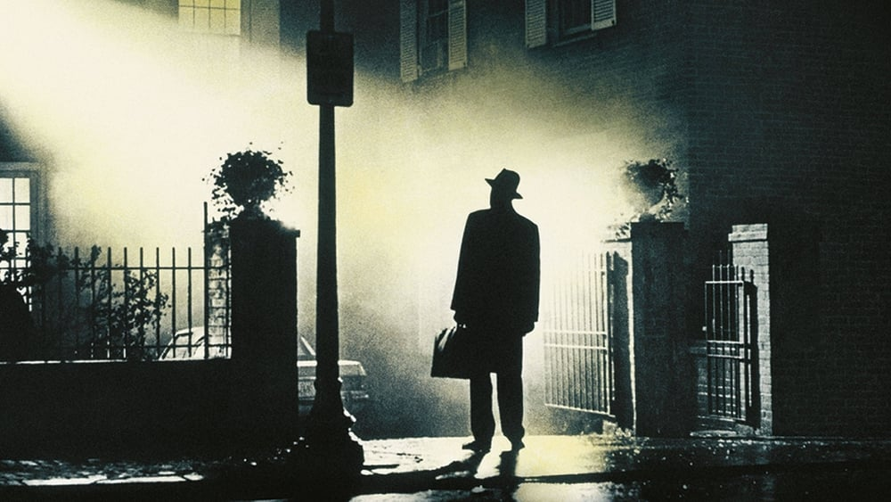

-
50 years later, 'The Exorcist''s mainstream success seems like a miracle
by Mitchel Green - October 12, 2023
|
mitchelgreen34@gmail.com

source: The Movie Database
We’ve seen many mainstream horror smash hits in recent years. “Get Out,” “A Quiet Place,” “Us,” plus your typical slew of sequel, reboot, and IP fare like “It” or the new “Halloween” films. Even discounting the huge successes that have come out of the genre lately, horror remains one of the few box office stalwarts, maintaining success through a dedicated audience and generally cheap-to-produce films. And yet, even with all of those recent financial successes, it’s still tough to comprehend how crazy mainstream audiences went for “The Exorcist” when it was released 50 years ago.
Adjusting for inflation, it is the 9th-highest-grossing film of all time at the domestic box office. The rest of the top ten makes plenty of sense. It’s full of your typical four-quadrant crowd-pleasers: “Star Wars,” “Titanic,” “The Sound of Music.” But “The Exorcist” stands alone, not just as the only horror movie in that top ten, but as an intentionally alienating, disturbing watch. It’s not the only film from the 1970s, but it is the only true New Hollywood film in the top 20 — a film that features heavily flawed and morally confused protagonists, one that’s unafraid to be mean and nasty, and one that doesn’t give the audience easy answers.
“The Exorcist” isn’t anti-faith, far from it. It’s two priests and the power of Christ that end up saving Regen from her possessor. One could say that it’s actually anti-science, with the scientific community both incapable of explaining what is wrong with Regen and dismissive of explanations outside their prior beliefs. Yet, to have a film this religious that is so uncertain of the effectiveness of faith in God feels radical not just for the time but even today, in which most mainstream movies are either not explicitly religious or unwavering in their faith. Portraying Father Karras as a man stricken with overwhelming grief and yet not finding comfort in a relationship with God is something you’d be more likely to find in an Ingmar Bergman art film than a Hollywood studio release. Despite its eventual reinforcement of Karras's original faith, it isn’t with some happy resolution. It’s merely forgiveness for Karras’s missteps, never calling him wrong for questioning God, and more making the argument that true faith isn’t blind but must come with intense speculation and scrutiny.
If the film’s uneasy relationship with religion wasn’t enough to turn audiences away, surely showing a possessed pre-teen girl masturbating with a crucifix would, right? Perhaps audiences just didn’t get enough imagery like that after seeing Divine penetrated with a rosary in John Waters’s “Multiple Maniacs” a couple of years prior. It’s hard to imagine depicting children in sexual situations (especially ones so sacrilegious) would even happen in a studio product now, let alone in a work that becomes a massive success with audiences — though I guess Netflix’s “Big Mouth” having seven seasons may disprove that point. Nevertheless, that is merely one of many cruel terrors “The Exorcist” inflicts upon its protagonists without real catharsis. The actual exorcism ends in a quick act of violence that almost immediately leads to Father Karras’s death, and it evokes a feeling of tepid, rather than overwhelming, relief. Of course, for the sickos out there (and I would occasionally include myself in that group), that depiction of pure evil can be part of the fun of movies like this, but that’s not the kind of ending you see in mainstream horror smash hits anymore.
What makes “The Exorcist” stand out among most of the big horror hits of today (and makes it such a surprise mainstream hit) is its unwillingness to give the audience the answers they crave. There’s a tendency in most modern blockbusters to overexplain what’s going on. This can range from unnecessary backstory to describing what is on screen with little elaboration. More often than not, this just bogs the film down in a flood of information and leaves little room for the imagination to run wild with what the eyes take in. At least when “The Exorcist” does backstory, as in the opening sequence in Iraq, it almost plays as a silent film, showing you objects and images and letting you conclude what they mean. Similarly, no explanation is given for why Regen is being targeted by Pazuzu. We can assume based on things we know about her character, but it's never confirmed, and that question of “Why is this happening?” makes you more uncomfortable than any explanation ever could.
You could make a film like “The Exorcist” today, but it would never become the kind of hit it was in the 70s. You can always blame audiences for their viewing habits, but a movie like this wouldn’t have this level of success anymore because studios like Warner Bros. don’t make films like this anymore. They don’t let their filmmakers or screenwriters take enough risks, they won’t challenge audiences for fear of losing potential viewers, and they won’t put their financial and marketing might behind a movie this transgressive. “The Exorcist” still holds up because it’s a great example of the kinds of films we don’t get anymore and never will again if Hollywood doesn’t get its act together.